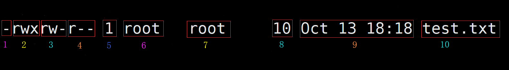

改变文件所有者命令：chown
基本语法：chown 新的文件所有者 文件名，例如：chmod pl test.txt的作用就是将test.txt的所有者变更为pl用户
改变目录及子目录下的文件所有者：chown -R 新的文件所有者 目录，例如：chmod -R pl /test/aa
改变文件所在组命令：chgrp
基本语法：chgrp 新的文件所在组 文件名，例如：chgrp pl test.txt的作用就是将test.txt的所有组变更为pl组
改变目录及子目录下的文件所在组：chgrp -R 新的文件所在组 目录，例如：chgrp -R pl /test/aa
改变用户所在组命令：usermod
基本语法：usermod -g 用户新的归属组名 用户名
文件信息详解

第一块：标识类型，如果是-则是普通文件，如果是d则是文件夹，如果是l则是软链接
第二块：标识文件用户拥有的权限
第三块：标识文件用户所在组的用户拥有的权限
第四块：标识非文件用户所在组的用户拥有的权限
第五块：如果是文件，则表示文件拥有的硬链接数量，如果是文件夹，则表示文件夹下面拥有的子文件夹的数量
第六块：文件的所有者
第七块：文件所有者所在的组
第八块：如果是文件，则表示文件的大小，如果是文件夹，则始终显示为4096
第九块：文件最后修改日期
第十块：文件名称
文件权限标识rwx详解
作用于文件：
[r]代表可读(read)：可以读取，查看
[w]代表可写(write)：可以修改，但是不代表可以删除该文件，删除一个文件的前提条件是对该文件所在的目录有写权限，才能够删除该文件
[w]代表可执行(execute)：可以被执行
作用于文件夹：
[r]代表可读(read)：可以读取，即执行ls命令的时候可以查看文件夹下的内容
[w]代表可写(write)：可以修改，即可以在文件夹内部创建、删除、重命名文件夹及文件
[w]代表可执行(execute)：可以进入该目录
修改文件权限命令：chmod
有两种方式：
第一种：用+、-、=变更权限，如chmod g+w,o-w test.txt或者chmod u=rwx,g=rx,o=x test.txt等待，其中u代表文件所有者，g代表文件所有者所在的组的用户，o代表非文件所有者所在组的用户，a代表所有用户
第二种：通过数字，如chmod 777 test.txt或者chmod 755 test.txt等等，其中4代表r，2代表w，1代表x